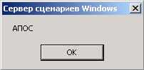
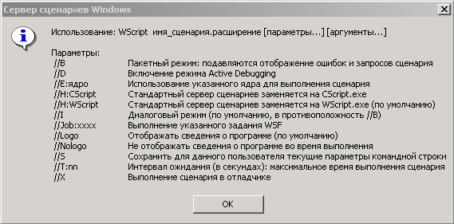
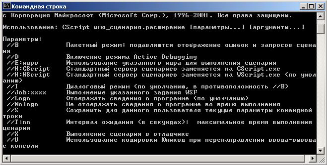

Начиная с Windows 2000, технология и средства администрирования Windows 2К претерпели кардинальные изменения. В Windows 2000 появилась единая среда управления MMC (Microsoft Management Console). MMC представляет собой общую консоль управления, которая предназначена для запуска программных модулей администрирования, конфигурирования или мониторинга локальных компьютеров и сети в целом (см. лабораторную работу № 3). Консоль управления MMC основана на технологии WMI (Windows Management Instrumentation), представляющей собой базовую технологию централизованного управления сетевой инфраструктурой платформы Windows. Для использования WMI посредством командной строки необходимо воспользоваться утилитой WMIC, которая обеспечивает доступ к основным инструментальным средствам WMI (классам WMI).
Кроме названных выше средств, Windows 2K содержат в своем составе диагностические утилиты командной строки для поиска и устранения сетевых неполадок (см. Практическое занятие 6). Дополнительный набор сервисных программ для Windows 2K содержится в Windows Resource Kit.
Однако всех этих инструментальных средств недостаточно для эффективного управления и администрирования современными корпоративными сетями. И, прежде всего, потому, что в названных штатных средствах отсутствуют средства автоматизации технологии управления и администрирования. На устранение этого разрыва был ориентирован сервер Windows Script Host (WSH), который относится к технологии Microsoft Windows Script (появился в Windows 98).
Наконец, недостаточная гибкость и функциональность языка командной оболочки cmd.exe и недостатки технологии WSH привели к созданию простого и мощного инструментального средства Microsoft PowerShell, которому посвящена лабораторная работа № 2.
2.2. Windows Script Host
Сервер обработки сценариев WSH работает со всеми объектами, доступными в Windows, и позволяет создавать комплексные приложения, основанные на использовании языков сценария. Скрипты WSH могут встраиваться в HTML-страницы. Поставляемый с Windows ХР/2К сервер WSH поддерживает два языка программирования VBScript и JScript. Кроме этих языков, которые для WSH являются стандартными, WSH способен поддерживать сценарии, написанные на любом языке, для которого имеется соответствующий модуль, поддерживающий технологию ActiveX Scripting, Сервер WSH имеет нумерации версий от 1.0 до 5.6.
Скрипт WSH представляет собой обычным текстовым файлом с расширением .js, .vbs или .wsf (Windows Script File); cкрипт с расширением .wsf содержит код на языке XML. В одном файле можно использовать все доступные скриптовые языки.
Вот пример предельно простого скрипта. Запустите блокнот (Notepad), напечатайте текст:
WScript.Echo "АПОС"
и сохраните этот текст в файле с расширением .vbs (например, 1. vbs). Теперь кликните два раза мышью по этому файлу, и Вы увидите следующее диалоговое окно

Рис. 1, Простое диалоговое окно.
Это самый простой способ запуска сценария. Аналогичный результат (см. рис. 1) можно получить, запуская сценарий с командной строки или с помощью меню Пуск. Для этого необходимо напечатать: WScript, указать путь и имя файла сценария (см. первую строку на рис. 2).
Наконец, если в блокноте напечатать:
WScript.Echo ("АПОС")
и сохранить этот текст в файле с расширением .js; то получим все то же, что и выше, но с использованием языка программирования JScript.
Этот же сценарий можно выполнить и из командной строки с помощью консольных версий WSH, используя CScript.exe или WScript.exe (оконная версия WSH).
WSH позволяет создавать полноценные программы, имеющие маленькие размеры файлов. При этом, поскольку в сценарии WSH можно использовать любые объекты ActiveX, зарегистрированные в системе, то такой сценарий способен быть очень мощным.
Для вывода полного списка параметров сервера введите в диалоговом окне «Запуск программ» (Пуск > Выполнить): WScript //? и щелкните ОК. На рис. 1 приведены параметры сервера сценариев WScript.exe, который предназначен для взаимодействия с пользователем через диалоговые окна Windows. Для работы в окне командной строки можно использовать CScript.exe или WScript.exe.

Рис. 2. Параметры сервера сценариев WScript.exe.
Для вывода списка параметров сервера при работе с командной строкой введите в командной строке: CScript //?.

Рис. 3. Параметры сервера сценариев CScript.exe.
WSH имеет собственную объектную модель, которая позволяет работать с файловой системой, системным реестром, ресурсами локальной сети и т.д. Вот стандартные объекты WSH 5.6:
WScript (это главным объект WSH, который служит для создания других объектов или связей между ними);
WshArguments (доступ ко всем параметрам командной строки запущенного сценария);
WshNamed (доступ к именованным параметрам командной строки);
WshUnnamed (доступ к безымянным параметрам командной строки);
WshNetwork (для работы с локальной сетью; позволяет подключать сетевые диски и принтеры);
WshController (для запуска сценария на удаленной машине);
WshRemote (для управления сценарием на удаленной машине);
WshShell (для работы с оболочкой Windows; создание ярлыков, работа с системным реестром и специальными папками Windows);
WshShortcut (для работы с ярлыками Windows);
WshSpecialfolders (для доступа к специальным папкам Windows);
WshURLShortcut (создание интернет-ссылок);
WshEnvironment (для доступа изменения и удаления переменных среды);
WshScriptExec (для работы со скриптами: запуск консольных приложений в качестве дочерних процессов, контроль их состояния, доступ к их стандартным входным и выходным потокам);
WshRemoteError (для получения информации об ошибке при выполнении сценария на удаленной машине).
По назначению перечисленных выше стандартных объектов WSH можно составить достаточно полное представление о возможностях сервера WSH в плане автоматизации технологии управления и администрирования сети Microsoft Windows.
Все объекты WSH имеют свои свойства и методы. Рассмотрим основные свойства и методы объекта WScript.
2.3. Свойства и методы объекта WScript
В сценариях WSH объект WScript является единственным объектом, который можно использовать сразу без предварительного его описания или создания (экземпляр WScript создается сервером автоматически). Для использования других объектов необходимо применить либо метод CreateObject, либо определенное свойство другого объекта. Свойства объекта WScript приведены в табл.1.
Свойство |
Описание |
application |
Предоставляет интерфейс Idispatch для объекта WScript |
Arguments |
Возвращает указатель на список аргументов командной строки |
FullName |
Возвращает имя исполняемого файла хоста и полный путь к нему (например, C:\Windows\wscript.exe) |
Name |
Выводит замечательную надпись Windows Scripting Host |
Path |
Определяет каталог и путь, содержащие wscript.exe или cscript.exe |
ScriptFullName |
Возвращает полный путь и имя исполняемого в данный момент скрипта |
ScriptName |
То же, что и ScriptFullName, но без пути |
StdErr |
Позволяет запущенному сценарию записывать сообщения в стандартный поток для ошибок |
StdIn |
Позволяет запущенному сценарию читать информацию из стандартного входного потока |
StdOut |
Позволяет запущенному сценарию записывать сообщения в стандартный выходной поток |
Version |
Возвращает версию W SH |
В качестве примера работы со свойствами объекта WScript поэкспериментируйте с нижеследующим материалом, который частично или полностью (с соблюдение синтаксиса; иначе будет выдана ошибка) должен быть размещен с использованием блокнота в некотором файле с расширением, например, .vbs. Далее этот файл сценария может быть запущен одним из рассмотренных выше способов.
WScript.Echo WScript.FullName
WScript.Echo WScript.Name
WScript.Echo WScript.Path
WScript.Echo WScript.ScriptFullName
WScript.Echo WScript.ScriptName
WScript.Echo WScript.Version
WScript.Echo WScript.Application.
Любой объект WSH предоставляет методы для работы внутри сценария с объектами автоматизации и вывода информации на экран. В табл.2 приведены методы объекта WScript.
Таблица 2. Методы объекта WScript.
Метод |
Описание |
CreteObject (strProgID [ , strPrefix]) |
Создает объект заданный параметром strProgID |
ConnectObject (strObject, strPrefix) |
Устанавливает соединение с объектом strObject, позволяющее писать функции обработчики его событий (имена функций должны начинаться с префикса strPrefix) |
DisconnectObject (obj) |
Отсоединяет объект obj, связь с которым была предварительно установлена в сценарии |
Echo ([Arg1] [,Arg2] [,…]) |
Выводит текстовую информацию на консоль или в диалоговое окно |
GetObject (strPathname [ , strProgID], strPrefix) |
Активизирует объект автоматизации определенным заданным файлом (параметр strPathname) или объект , заданный параметром strProgID |
Quit ([intErrorCode]) |
Пересылает выполнение сценария с заданным параметром intErrorCode кодом выхода. Если параметр intErrorCode не задан, то объект WScript устанавливает код выхода равным нулю |
Приостанавливает выполнение сценария (переводит его в неактивное состояние) на заданное параметром intTime число миллисекунд |
Строковый параметр
strProglD в методе
CreateObject
называется программным идентификатором
объекта. При наличии в CreateObject
необязательного параметра strPrefix, возможна
обработка событий, возникающих в этом
объекте путем вызова функции, имя которой
состоит из префикса strPrefix и имени этого
события.
Объекты автоматизации можно создавать и без помощи WSH. (в JScript для этого используется объект ActiveXObject, а в VBScript можно использовать специальную функцию CreteObject). Однако организовывать в сценарии обработку событий можно только посредством метода WScript.CreateObject.
Метод ConnectObject обеспечивает интерфейс со свойствами объекта, соединение с которым осуществляемся с помощью этого метода. Метод DisconnectObjec производит отсоединение объекта.
В методе Echo параметры Arg1 и Arg2 задают аргументы для вывода. Если сценарий был запущен с помощью WScript.exe, то вывод будет направлен в диалоговое окно (при использовании же CScript.exe — на экран). Если выводимых строк слишком много, то можно воспользоваться пробелом со знаком подчеркивания «_». Для конкатенации используют оператор & или +.
Метод Sleep применяется при необходимости организовать задержки выполнения сценария, например, при имитации нажатия клавиш.
Остальные стандартные объекты WSH 5.6, а также их свойства и методы будет рассмотрены, по мере необходимости, в последующих лабораторных работах по курсу АПОС; в которых наряду с применением штатных средств администрирования сетей Microsoft предлагается воспользоваться и технологией программирования сценариев. Для предварительного знакомства с возможностями сценариев WSH рекомендуем поработать с VBScript-сценариями, тексты которых содержатся в папке Приложение 1; в папке Приложение 2 приведен Справочник по языку VBScript.
3. Порядок выполнения работы
3.1. Изучите материал, изложенный в пункте 2 данной лабораторной работы, и получите индивидуальное задание у преподавателя.
3.2. Включите закрепленный за вами компьютер и выполните необходимую процедуру регистрации согласно присвоенной вам администратором (преподавателем) учетной записи и паролю.
3.3. Выполните простые сценарии из п. 2.2, поработайте с VBScript-сценариями, указанными преподавателем.
3.4. Выполните индивидуальное задание.
3.5. Выключите компьютер и приведите в порядок рабочее место.
4. Содержание отчета
4.1. Цель работы.
4.2. Краткую характеристику WSH 5.6 и результаты выполнения индивидуального задания.
4.3.Выводы по работе.
5. Контрольные вопросы.
1. Назовите основные средства администрирования Windows.
2. В чем состоит основной недостаток штатных средств администрирования Windows?
3. Какими возможностями обладает сценариев WSH?
4. Чем различаются WScript.exe и CScript.exe?
5. Чем отличаются объект WScript от остальных объектов WSH?
6. Перечислите основные свойства объекта WScript.
7. Назовите основные методы объекта WScript.
1. Борн Г. Руководство разработчика
на Microsoft Windows Script Host 2.0.Мастер класс/ Пер. с
англ. – СПб.:
Питер, 2001. – 480c.
2. Попов А.В. Windows Script Host для Microsoft 2000/ХР. -- СПб.: БХВ-Петербург, 2004. – 640c.
3. Торрес Дж. Скприпты для администратора Windows. Специальный справочник. – СПб.: Питер, 2002. – 336c.